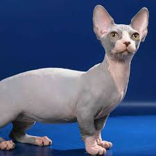
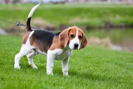

¿Y si adoptamos un amigo peludo?
Sarita, cuando vivas con el Kevin él va a necesitar un amigo peludo y un gatito sin pelos para sobrevivir.
Un gato o un perro puede llenar nuestro hogar de alegría, ternura y momentos inolvidables.
¡Juntos podemos cambiar una vida!

¿Por qué adoptar?
- ❤️ Nos dan amor incondicional y compañía todos los días.
- 🏡 Transforman una casa en un verdadero hogar.
- 😺 Un gato ronroneando o un perro moviendo la cola es la mejor bienvenida.
- 🌱 Adoptar salva vidas y ayuda a reducir el abandono.
- 😊 Compartir responsabilidades y cuidados nos une más como pareja.
Frases motivadoras
“Un hogar no está completo sin el sonido de patitas.”
“Adoptar es regalar y recibir amor multiplicado.”
“El mejor amigo puede tener cuatro patas y mucho pelo.”
“Salvar una vida es el comienzo de una gran historia juntos.”
“La felicidad se mide en lamidos y ronroneos.”
“No se compra el amor, se adopta.”
Imagina nuestro futuro
¿Te imaginas los momentos juntos?



¿Te animás?
Adoptar es un acto de amor.
¿Nos animamos juntos a dar el siguiente paso?
Si querés, podemos visitar juntos un refugio o buscar información sobre adopción responsable.